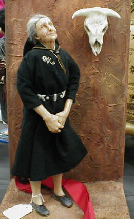
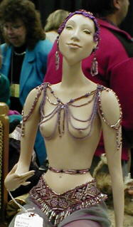
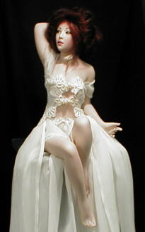
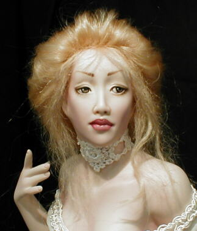
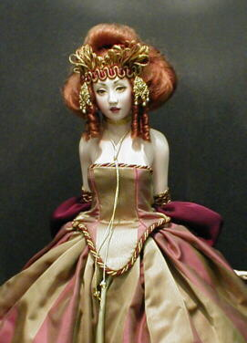

Santa Fe 2000 Doll Show - Page 4


This beautiful rendition of Georgia O'Keefe was the second place winner in the "limited edition" category. I believe it is a resin piece

This beautiful lady was the first place winner in the "limited edition" category. She is porcelain.

The wonderful work of "Monica".

A close up of another of Monica's beautiful ladies.

One more of Monica's dolls.